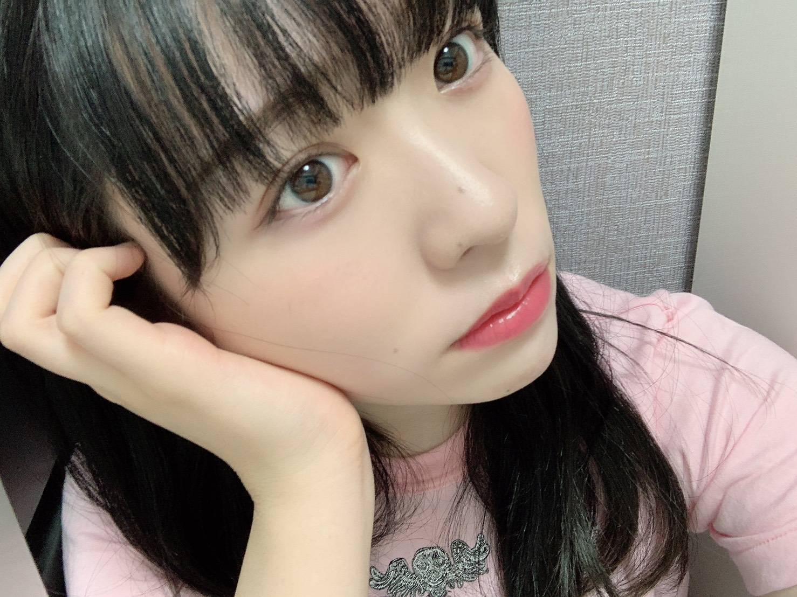
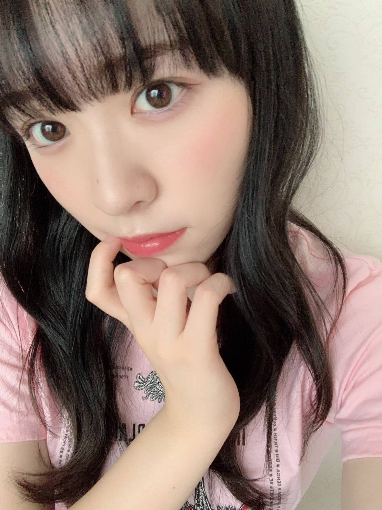

2020/0906Sun紙吹雪の鳥
24時間TV、FNS歌謡祭
出演させて頂きました！

最近前髪を重めスタイルにしたので
前髪がとても扱い易いです。
専ら高いポニーテールが多いけど
どうでしょうか！
Route 246素敵な曲だし
物凄く心地良く、踊りやすいです。

もう9月なんですねー
9月になるともうすぐで私の誕生日かあと
勝手にわくわくしております(2ヶ月後)
年々時が経つの早く感じます、、
早く皆さんにお会いしたいです！

花奈さんは入ってきた当初から
私の事を本当に可愛がってくださっていて
そのおかげで実現したカナヲとのグラビア撮影や
雑誌の取材もありました。
セラミュで同じチームになったあたりからは
お仕事の話もするようになり
みんなでご飯に行ったり
カラオケに行ったりと、沢山の思い出を
花奈さんと作らせていただきました。
2019年の真夏の全国ツアーで踊った日常。
花奈さんとたまおとれなちで踊った
間奏のダンス、今でも忘れない。
熱かった。夏だからとかではなくて
感情的に物凄く燃えている感じが
した瞬間でした。
あの時花奈さんと隣同士で踊った
あの感覚は忘れられません。

みり愛
2020/09/06 20:30
コメント(394)
ブログ更新ありがとう！
みり愛ちゃんが出る音楽番組はかかさずチェックしてるよ！
特にRoute 246のダンスはみり愛ちゃんの良さが存分に発揮できてるように見えて最高
最近時間が過ぎるのが早い気がする。
あっという間に年末になってしまいそう。
その前にみり愛ちゃんの誕生日が来るけどね！
握手会で直接会ってお祝いするのは難しいかもしれないけど、気持ちは盛大に祝わさせてもらうつもりだよ
今から楽しみだー
花奈さんの卒業は寂しいね。
個人的に花奈さんのダンスも好きだし、アンダーライブでみり愛ちゃんとパフォーマンスしてるのに魅せられてたから。
卒業までに一緒ライブできる機会があれば見たい！
まだ暑さは続くだろうから体調には気をつけて頑張っていこうね。
ではまた！
hideto
みり愛ちゃんが出る音楽番組はかかさずチェックしてるよ！
特にRoute 246のダンスはみり愛ちゃんの良さが存分に発揮できてるように見えて最高
最近時間が過ぎるのが早い気がする。
あっという間に年末になってしまいそう。
その前にみり愛ちゃんの誕生日が来るけどね！
握手会で直接会ってお祝いするのは難しいかもしれないけど、気持ちは盛大に祝わさせてもらうつもりだよ
今から楽しみだー
花奈さんの卒業は寂しいね。
個人的に花奈さんのダンスも好きだし、アンダーライブでみり愛ちゃんとパフォーマンスしてるのに魅せられてたから。
卒業までに一緒ライブできる機会があれば見たい！
まだ暑さは続くだろうから体調には気をつけて頑張っていこうね。
ではまた！
hideto
ブログ更新ありがとう！
みり愛ちゃんお久しぶりです。
FNS、カウントダウンTV全てチェック致しましたよ〜
みり愛ちゃんのパフォーマンスはいつ見ても圧巻ですね！会えなくてもこうやってテレビでみり愛ちゃんの活躍を見れていることはみり愛推しとして幸せですよ〜これからも注目してます！
あと相変わらずって言っちゃあれだけど、
いつもモバメたくさん送ってくれてありがとうね！
これからもみり愛ちゃんにたくさんお世話になるね。笑
今回はこの辺にしとこうかな！
くれぐれもお体には本当に気をつけて！！
では、またね〜
みり愛ちゃんお久しぶりです。
FNS、カウントダウンTV全てチェック致しましたよ〜
みり愛ちゃんのパフォーマンスはいつ見ても圧巻ですね！会えなくてもこうやってテレビでみり愛ちゃんの活躍を見れていることはみり愛推しとして幸せですよ〜これからも注目してます！
あと相変わらずって言っちゃあれだけど、
いつもモバメたくさん送ってくれてありがとうね！
これからもみり愛ちゃんにたくさんお世話になるね。笑
今回はこの辺にしとこうかな！
くれぐれもお体には本当に気をつけて！！
では、またね〜
応援してます。これからもがんばれ！
ブログ更新ありがとう。
高めポニテ、すごく似合ってるし好きだよ。
かなりんとの思い出、今後のみり愛の活動にもすごく重要な意味を持つものになる気がします。かなりんの思いをみり愛が引き継いでくれたら、かなりんも喜んでくれると思います。
なんか今日はこんなコメントでごめんね。
ちょっと話を変えて、いつもモバメありがとう！今日はモバメとブログでみり愛の写真たくさんでみり愛フォルダが潤ったよ。ありがとうね！
ではまたコメントするね。まだ暑いし天候も不順なので、体調気をつけてね。
高めポニテ、すごく似合ってるし好きだよ。
かなりんとの思い出、今後のみり愛の活動にもすごく重要な意味を持つものになる気がします。かなりんの思いをみり愛が引き継いでくれたら、かなりんも喜んでくれると思います。
なんか今日はこんなコメントでごめんね。
ちょっと話を変えて、いつもモバメありがとう！今日はモバメとブログでみり愛の写真たくさんでみり愛フォルダが潤ったよ。ありがとうね！
ではまたコメントするね。まだ暑いし天候も不順なので、体調気をつけてね。
みり愛ちゃんこんばんは‼ありがとうございます！楽しみにしてます！頑張ります‼頑張って下さい！ありがとうございます‼
おはまる水産
みりあちゃんブログ更新ありがとう！
歌番組しっかりリアルタイムで見れたよー
やっぱりダンスキレキレで見とれてしましました。
ポニテは一番好きな髪型だから最高です！！
あと少しで誕生日ですね…
しっかりお祝いさせていただきます！
まだまだ大変な時期だけど花奈さんと最後まで良い思い出を作ってください。
季節の変わり目だから体調崩さないように気おつけてね！
みりあちゃんブログ更新ありがとう！
歌番組しっかりリアルタイムで見れたよー
やっぱりダンスキレキレで見とれてしましました。
ポニテは一番好きな髪型だから最高です！！
あと少しで誕生日ですね…
しっかりお祝いさせていただきます！
まだまだ大変な時期だけど花奈さんと最後まで良い思い出を作ってください。
季節の変わり目だから体調崩さないように気おつけてね！
かなりんへの気持ちブログありがとうございます^ ^
読んでて、あーそういうこともあったなって懐かしい気持ちがして、卒業寂しいなって思った。
ポニテ好きだから嬉しいな
涼
読んでて、あーそういうこともあったなって懐かしい気持ちがして、卒業寂しいなって思った。
ポニテ好きだから嬉しいな
涼
みり愛ちゃん、ブログ更新ありがとう
FNSのみり愛ちゃん凄く良かったよ！ソロで抜かれてたし、やっぱり最高のダンスだった。
みり愛ちゃん生誕祭まであと少しだね〜笑
今年の生誕グッズも勿論全部買うね〜どんなデザインか期待してるよ！笑
俺も全ツ2019の日常は忘れられないな。あの時のダンスは本当にかっこよかった！今年も全ツでみり愛ちゃんのダンスを観たかったんだけど…卒業はファンとしても寂しいけど前向きに捉えるしかないよね…
まだまだ落ち着かない世の中だし、体調には気を付けてね！
FNSのみり愛ちゃん凄く良かったよ！ソロで抜かれてたし、やっぱり最高のダンスだった。
みり愛ちゃん生誕祭まであと少しだね〜笑
今年の生誕グッズも勿論全部買うね〜どんなデザインか期待してるよ！笑
俺も全ツ2019の日常は忘れられないな。あの時のダンスは本当にかっこよかった！今年も全ツでみり愛ちゃんのダンスを観たかったんだけど…卒業はファンとしても寂しいけど前向きに捉えるしかないよね…
まだまだ落ち着かない世の中だし、体調には気を付けてね！
ステージに立つと思い出すことがまた増えるんですね。
卒業発表があるたび、ひめたんの言葉を思い出します。アイドルの瞬間、瞬間を大切に応援させていただきます
卒業発表があるたび、ひめたんの言葉を思い出します。アイドルの瞬間、瞬間を大切に応援させていただきます
みり愛ちゃんブログ更新ありがとう！
早く会いたいよー。また会える日を楽しみにしてるね！！
早く会いたいよー。また会える日を楽しみにしてるね！！
みり愛ちゃんの高めポニーテールめちゃくちゃ好きです！！！
可愛い！！！
可愛い！！！
こんにちわ
ばりょーです
どうも。
ブログ更新ありがとうございます。
いつも癒しを頂いております。
感謝です。
最近は台風やコロナ等大変な時期ですが早くみり愛さんにお会い出来るようこの事態が収まるよう祈っております。
また握手会など開催されましたら必ず会いに行きますね！
また遊びましょ〜！
じゃ、またね。
ばりょーです
どうも。
ブログ更新ありがとうございます。
いつも癒しを頂いております。
感謝です。
最近は台風やコロナ等大変な時期ですが早くみり愛さんにお会い出来るようこの事態が収まるよう祈っております。
また握手会など開催されましたら必ず会いに行きますね！
また遊びましょ〜！
じゃ、またね。
ブログ更新ありがと！
重め前髪お揃っち〜(><)
route246のときほんとかっこよかった。
後列の特に2期生の強さ。
ダンス曲だから常にいて欲しいとか思っちゃう。
高めのポニーテールだと横顔がめちゃ映えてる！
あの時の日常は今でも思い出すと震えが止まりませんね。ひとりひとりのダンスもかっこよかったし、センターのひなこちゃんもかっこよかった。気迫がすごくて。
重め前髪お揃っち〜(><)
route246のときほんとかっこよかった。
後列の特に2期生の強さ。
ダンス曲だから常にいて欲しいとか思っちゃう。
高めのポニーテールだと横顔がめちゃ映えてる！
あの時の日常は今でも思い出すと震えが止まりませんね。ひとりひとりのダンスもかっこよかったし、センターのひなこちゃんもかっこよかった。気迫がすごくて。
おつかれん
みり愛ちゃんの高いポニテ、とても素敵♪
髪色が濃いと、より際立ってて躍動感に溢れます。
風船の時、この子は髪の毛の先まで制御してダンス出来るのか！と驚いたのが、今でも鮮明に思い出される。
前髪が重い方が個人的に可愛いと思う。
ダンスでその前髪が踊り、表情を作り出すのが好き。
最後にかなりんと踊る姿を生で観たいなぁ。
あ～ライブに行きてぇー！
髪色が濃いと、より際立ってて躍動感に溢れます。
風船の時、この子は髪の毛の先まで制御してダンス出来るのか！と驚いたのが、今でも鮮明に思い出される。
前髪が重い方が個人的に可愛いと思う。
ダンスでその前髪が踊り、表情を作り出すのが好き。
最後にかなりんと踊る姿を生で観たいなぁ。
あ～ライブに行きてぇー！
みり愛ちゃんブログ更新ありがとう！！！
9月になって涼しくなりましたね！
早くお会いしたいです！
9月になって涼しくなりましたね！
早くお会いしたいです！
みり愛ちゃんブログ更新ありがとう！！
FNSかっこよかったよ！！
FNSかっこよかったよ！！
みり愛ブログ更新ありがと！
ルート246にいたのみた！嬉しかった〜
みり愛はダンスの迫力が凄くてかっこいい！尊敬
かなりんとの写真好き
ルート246にいたのみた！嬉しかった〜
みり愛はダンスの迫力が凄くてかっこいい！尊敬
かなりんとの写真好き
またテレビで見られるのを楽しみしています！！
みり愛ちゃんこんばんはー
FNS、24時間TVめちゃくちゃ良かったよー！！
ポニーテールめちゃくちゃ可愛かったです！
ただいまこちらは、台風の真っ最中で風がとても強いです。
そんな日にブログ送ってくれてありがとう。
勇気が出ました。
みり愛ちゃんが花奈ちゃんや先輩方からパワーを得たように私も乃木坂ちゃん、みり愛ちゃんからパワーを得てます。
なかなか会えないけど、メディアに出てるみんなを見て毎日頑張るね。
最近、仕事では現場の責任者に就任することができました。
これもいつも頑張ってくれてる、みんなのおかげです。
いつもありがとう！
これからもよろしくね。
FNS、24時間TVめちゃくちゃ良かったよー！！
ポニーテールめちゃくちゃ可愛かったです！
ただいまこちらは、台風の真っ最中で風がとても強いです。
そんな日にブログ送ってくれてありがとう。
勇気が出ました。
みり愛ちゃんが花奈ちゃんや先輩方からパワーを得たように私も乃木坂ちゃん、みり愛ちゃんからパワーを得てます。
なかなか会えないけど、メディアに出てるみんなを見て毎日頑張るね。
最近、仕事では現場の責任者に就任することができました。
これもいつも頑張ってくれてる、みんなのおかげです。
いつもありがとう！
これからもよろしくね。
みり愛ちゃんブログ更新ありがとう。
やっぱ黒髪可愛いなぁァァ
かなりんと過ごせるのあとちょっとだけどたくさんたくさん楽しんでください。みり愛ちゃん×かなりんのダンスすごく好きだったなぁ、また見たい。
やっぱ黒髪可愛いなぁァァ
かなりんと過ごせるのあとちょっとだけどたくさんたくさん楽しんでください。みり愛ちゃん×かなりんのダンスすごく好きだったなぁ、また見たい。
みり愛ブログ更新ありがとう！FNS歌謡祭も24時間テレビも見ました！お疲れ様でした！みり愛ちゃんのポニテ大好きなので嬉しかったです！あとroute246のダンスが最高にかっこよかったです！話したいことがたくさんあって、早くイベントで会いたいです！
みり愛ちゃんとかなりんのコンビが大好きなので、ずっと仲良しでいて欲しいなと思います！そして去年の日常の間奏のダンス、とてもかっこよくてしなやかで見入っていたのを覚えています！これからも仲の良いお2人でいてください！
みり愛ちゃんとかなりんのコンビが大好きなので、ずっと仲良しでいて欲しいなと思います！そして去年の日常の間奏のダンス、とてもかっこよくてしなやかで見入っていたのを覚えています！これからも仲の良いお2人でいてください！
みり愛ちゃんブログ更新ありがとうございます。
みり愛ちゃん今日も１日お疲れ様です。
みり愛ちゃん今日も可愛いです。
みり愛ちゃんは２期生の中で推してるよ。
今日はお仕事でした。
凄く疲れました。
毎日覚えることが多くて大変です。
みり愛ちゃんはお休みの時は何をして過ごしますか？
私は、乃木坂の曲を聞いたり生写真の整理をしたりしています。
みり愛ちゃんの生写真凄く欲しいです。
これからコツコツと集めていきます。
これからもお仕事頑張って下さい。
自分もお仕事頑張ります。
そして体調を崩さないように気をつけてください。
私も体調を崩さないように気を付けます。
これからのブログを楽しみにしてます。
みり愛ちゃん今日も１日お疲れ様です。
みり愛ちゃん今日も可愛いです。
みり愛ちゃんは２期生の中で推してるよ。
今日はお仕事でした。
凄く疲れました。
毎日覚えることが多くて大変です。
みり愛ちゃんはお休みの時は何をして過ごしますか？
私は、乃木坂の曲を聞いたり生写真の整理をしたりしています。
みり愛ちゃんの生写真凄く欲しいです。
これからコツコツと集めていきます。
これからもお仕事頑張って下さい。
自分もお仕事頑張ります。
そして体調を崩さないように気をつけてください。
私も体調を崩さないように気を付けます。
これからのブログを楽しみにしてます。
ブログ更新有難う～～！
ゆっくり大切に読ませていただきました！
みり愛ちゃんの書く文章がだいすきです ˊᵕˋ
ゆっくり大切に読ませていただきました！
みり愛ちゃんの書く文章がだいすきです ˊᵕˋ
ブログ更新ありがとう！
前髪重めとっても似合ってます！
そしてroute246のみりあちゃんのダンスとても好きです。滑らかで、大胆で、見ていてとってもワクワクするダンスだと感じました！
誕生日もあと少しですしお祝いする準備をしておきますね！！！
前髪重めとっても似合ってます！
そしてroute246のみりあちゃんのダンスとても好きです。滑らかで、大胆で、見ていてとってもワクワクするダンスだと感じました！
誕生日もあと少しですしお祝いする準備をしておきますね！！！
みり愛ちゃんしか勝たん。
かなりん愛が止まらない
渡辺みり愛ちゃん
ブログ更新ありがとう
重めの前髪もいい感じだね
未央奈ちゃんも昨日のTGCは
重めの前髪だったよ⁉︎
2人ともよく似合ってますよ⁉︎
また色んな髪型チャレンジしてね⁉︎(^^)
渡辺みり愛ちゃん
ブログ更新ありがとう
重めの前髪もいい感じだね
未央奈ちゃんも昨日のTGCは
重めの前髪だったよ⁉︎
2人ともよく似合ってますよ⁉︎
また色んな髪型チャレンジしてね⁉︎(^^)
ブログありがとう！
ポニーテール最高！かわい過ぎる！
早く会いたいよ〜
ポニーテール最高！かわい過ぎる！
早く会いたいよ〜
更新ありがとうぉー！
みり愛ちゃんのダンスはかっこいいし可愛いのでとても好きだよ、route246もすごくかっこよかったよぉー！
かなりんとの思い出もたくさんあって卒業はとても寂しいと思うけど自分もとても寂しいです
早く会いたいです
まだまだコロナには気をつけてね
大好き
みり愛ちゃんのダンスはかっこいいし可愛いのでとても好きだよ、route246もすごくかっこよかったよぉー！
かなりんとの思い出もたくさんあって卒業はとても寂しいと思うけど自分もとても寂しいです
早く会いたいです
まだまだコロナには気をつけてね
大好き
みりあたん髪型きゃわ♡
みりあー
みり愛さんのハート、大好き
みり愛ちゃん、ブログ更新ありが！
みり愛ちゃんも髪型も写真も凄く可愛いです！
これからも応援してます！好き！
みり愛ちゃんも髪型も写真も凄く可愛いです！
これからも応援してます！好き！
今年ももうすぐ終わりやね。
はよ会いたいけどなかなか厳しそう。
体調に気をつけて！
はよ会いたいけどなかなか厳しそう。
体調に気をつけて！
ブログありがとうー！
route246のみり愛ちゃんのダンスがかっこいいです！！
去年の全ツの日常めっちゃかっこよくて感動しました。
またあのダンスパートかなりん含め見たいなぁ…
route246のみり愛ちゃんのダンスがかっこいいです！！
去年の全ツの日常めっちゃかっこよくて感動しました。
またあのダンスパートかなりん含め見たいなぁ…
みり愛ちゃんのRoute246めちゃくちゃかっこよかった。惚れ直したよ。神宮の日常ね、ライビュで見てたけどみんなの迫力に圧倒されて涙が出ました。感動とか悲しいとかじゃなくて、あんな気持ちで涙が出たのは初めてだった。私もあの日常は忘れない。ありがとう。
更新ありがとうございます❤
写真かわいい～❤
前髪とポニーテールとroute246の衣装似合ってるよ～かわいい❤
２４時間テレビのTシャツ着てる写真もかわいい～❤
体調に気をつけてくださいね。
写真かわいい～❤
前髪とポニーテールとroute246の衣装似合ってるよ～かわいい❤
２４時間テレビのTシャツ着てる写真もかわいい～❤
体調に気をつけてくださいね。
みり愛さんブログ更新ありがとうございます。
24時間テレビ、FNS歌謡祭どちらも見ることが出来ました。みり愛さんのRoute246のダンスしている姿好きです。
モバメも毎日の癒しになってます。ありがとうございます。
これからも応援してます！本日はブログ更新本当にありがとうございました。
24時間テレビ、FNS歌謡祭どちらも見ることが出来ました。みり愛さんのRoute246のダンスしている姿好きです。
モバメも毎日の癒しになってます。ありがとうございます。
これからも応援してます！本日はブログ更新本当にありがとうございました。
みりあちゃん凄く大人ぽくなったね
みり愛ちゃん！FNSものすごくかっこよかった！髪型も可愛いし、いろいろ頑張れそう！最近は毎日大変で忙しいけど、みり愛ちゃんの46時間のタオルが届いたり、ブログ更新してくれたりで毎日頑張れています。握手会がいつになるかは分からないけど会える日を楽しみにしてます！(個握7枚を大切に保管してる)
みり愛ちゃんブログ更新ありがとう(^^)
FNS見ました。
ポニーテールも凄く似合ってて、ダンスも輝いていました！
早くみり愛ちゃんに会って、沢山お話がしたいです(’-’*)♪
残りの時間は少ないと思うけど、かなりんと沢山思い出作って下さい！
これからもずっとみり愛ちゃんのことを応援します(^^)v
FNS見ました。
ポニーテールも凄く似合ってて、ダンスも輝いていました！
早くみり愛ちゃんに会って、沢山お話がしたいです(’-’*)♪
残りの時間は少ないと思うけど、かなりんと沢山思い出作って下さい！
これからもずっとみり愛ちゃんのことを応援します(^^)v
みりあ
最後の写真のなんかすごく感じる感。
ふざけた写真なんだけど何かエモさがあるよね。
最後の写真のなんかすごく感じる感。
ふざけた写真なんだけど何かエモさがあるよね。
白石さんとのエピソードもそうですが、いつもは語らないみり愛さんが、ブログに綴る言葉はその分想いが深くて染みます。
自分も話すタイプではないので、その気持ちはすこしはわかる気がします。
また少しの時間は残ってます。思い出もっと作れるいいですね
自分も話すタイプではないので、その気持ちはすこしはわかる気がします。
また少しの時間は残ってます。思い出もっと作れるいいですね
しんみりしますね。みり愛さんこれからも頑張ってくださいね！
みり愛〜ブログ更新ありがとう！
「Route 246」素敵な楽曲ですね。
曲調とダンスがとてもみり愛と合っていると感じます。
髪色と髪型、本当に素敵です。
かなさん、とても偉大な存在ですね。
乃木坂のパフォーマンスを引っ張ってくれていると感じます。
アンダーライブはもちろん、全国ツアーでも本当に目を惹かれる存在です。
特に私が忘れられないのは北海道でのアンダーライブ。
「三角の空き地」でセンターを務め、圧倒的パフォーマンスで会場全体を虜にしました。
本当にかなさんには脱帽です。
みり愛との関係もとても素敵なものに見受けられます。
セラミュ 期間でさらに仲が深まったのかなと感じました。
卒業までの時間をどうか悔いのないようお過ごし下さい。
私も精一杯応援したいと思います。
いつもありがとう。本当に自慢の推しです。
大好き！！！
「Route 246」素敵な楽曲ですね。
曲調とダンスがとてもみり愛と合っていると感じます。
髪色と髪型、本当に素敵です。
かなさん、とても偉大な存在ですね。
乃木坂のパフォーマンスを引っ張ってくれていると感じます。
アンダーライブはもちろん、全国ツアーでも本当に目を惹かれる存在です。
特に私が忘れられないのは北海道でのアンダーライブ。
「三角の空き地」でセンターを務め、圧倒的パフォーマンスで会場全体を虜にしました。
本当にかなさんには脱帽です。
みり愛との関係もとても素敵なものに見受けられます。
セラミュ 期間でさらに仲が深まったのかなと感じました。
卒業までの時間をどうか悔いのないようお過ごし下さい。
私も精一杯応援したいと思います。
いつもありがとう。本当に自慢の推しです。
大好き！！！
みり愛ちゃん、ブログありがとう！
FNS見ました！
route246は、みり愛ちゃんのめちゃくちゃ上手なダンスが見られるのが良かったよ
お疲れ様でした、本当に最高でした！！
花奈さんには、たくさん思い出があるんですね。
今のところ時期は発表されてないし、少しでも多く思い出を増やせたけたら、、、！なんて思うけど、時期が時期だけに難しいかもですよね。
ウィルスが恨めしいです
平穏な日々が少しでも早く帰ってくると良いですね
あと、頼んだMV集が明後日届くみたいです！
ゆっくりと咲く花はめちゃくちゃ楽しみですし、風船のMVが個人的に大好きなので沢山見ようと思います！
2ヶ月があっという間なんて、2日なんてきっと一瞬でしょうねw
とりあえず今一回言っときます
お誕生日おめでとう
いつもありがとうございます
これからもずっと応援してます！
ひろき
FNS見ました！
route246は、みり愛ちゃんのめちゃくちゃ上手なダンスが見られるのが良かったよ
お疲れ様でした、本当に最高でした！！
花奈さんには、たくさん思い出があるんですね。
今のところ時期は発表されてないし、少しでも多く思い出を増やせたけたら、、、！なんて思うけど、時期が時期だけに難しいかもですよね。
ウィルスが恨めしいです
平穏な日々が少しでも早く帰ってくると良いですね
あと、頼んだMV集が明後日届くみたいです！
ゆっくりと咲く花はめちゃくちゃ楽しみですし、風船のMVが個人的に大好きなので沢山見ようと思います！
2ヶ月があっという間なんて、2日なんてきっと一瞬でしょうねw
とりあえず今一回言っときます
お誕生日おめでとう
いつもありがとうございます
これからもずっと応援してます！
ひろき
こんばんは！
今日も素敵なブログをありがとう^_^
自分もみり愛ちゃんの誕生日に、
ソワソワしてる笑
また一つ歳を取り、素敵な女性に
なっていくみり愛ちゃんが。
大切な人と過ごしたひとときは、
決してなくならないから、ずっと
心に留めておこう
今日も素敵なブログをありがとう^_^
自分もみり愛ちゃんの誕生日に、
ソワソワしてる笑
また一つ歳を取り、素敵な女性に
なっていくみり愛ちゃんが。
大切な人と過ごしたひとときは、
決してなくならないから、ずっと
心に留めておこう
みり愛ちゃんブログ更新ありがとー！
髪型を変えた姿すごく可愛いよ！
俺もみり愛ちゃんに早く会いたいよ！！
かなりんとの残り少ない日々を楽しく過ごして、沢山の思い出を作ってね！！
これからも大好きだよ！！
せいちゃん
髪型を変えた姿すごく可愛いよ！
俺もみり愛ちゃんに早く会いたいよ！！
かなりんとの残り少ない日々を楽しく過ごして、沢山の思い出を作ってね！！
これからも大好きだよ！！
せいちゃん
更新ありがとう！
その衣装可愛いよね〜
前髪重めな感じその衣装と似合ってて好き♪
9月なんてびっくりだよ…今年何もしてないや…
かなりんの卒業寂しいけど背中を押さなきゃね
その衣装可愛いよね〜
前髪重めな感じその衣装と似合ってて好き♪
9月なんてびっくりだよ…今年何もしてないや…
かなりんの卒業寂しいけど背中を押さなきゃね


色々思いはあるよね…寂しいね
早く直接お話したいな
身体に気をつけてFIGHT！！